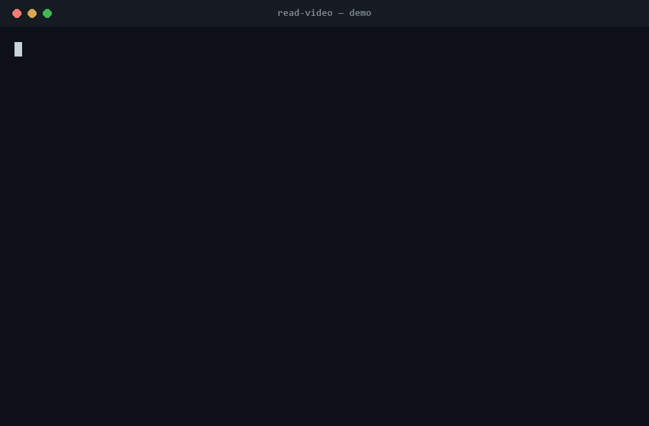

01
INPUT / clip.mp4
73.6 SEC / 1080P
73.6 SEC / 1080P
SourceLocal or URL
Codex-native video intelligence
read-video turns motion into evidence an agent can inspect: selected frames, timestamped speech, and a manifest that keeps every answer grounded.

Screening room
The dominant expense is often the agent reading frames—not transcription. The estimate shows the whole production budget before extraction begins.
Inspect duration, resolution, audio, captions, and local sidecars. Nothing is uploaded and no model is downloaded.
video.py probe clip.mp4
Calculate frame tokens, transcription spend, dependency status, model downloads, and every cloud fallback in the chain.
video.py estimate clip.mp4 --human
Extract only the approved frames and transcript. Cloud processing and model downloads each require their own explicit flag.
video.py run clip.mp4 --workdir out
Production controls
Every boundary is visible in machine-readable output, and every sensitive action is blocked before media acquisition or conversion.
Frames, transcript, output, and worst-case backend fallback are priced before processing.
Sidecars, captions, faster-whisper, and trx stay on the machine by default.
Any OpenAI, Groq, OpenRouter, or Gemini hop requires --allow-cloud.
A first-run Whisper download appears during estimate and needs --allow-model-download.
A repeatable pipeline turns saved clips into timestamped, categorized notes while keeping transcription local.
Sixty-five minutes of original brainstorm audio became six decision-ready project candidates without cloud transcription.
# Install the Codex-compatible skill .\scripts\install-skill.ps1 # Generate original, copyright-free test footage python scripts/create-demo-fixture.py # Inspect the cost gate, then process locally python skill/scripts/video.py estimate samples/build-week-demo.mp4 --human python skill/scripts/video.py run samples/build-week-demo.mp4 --workdir out